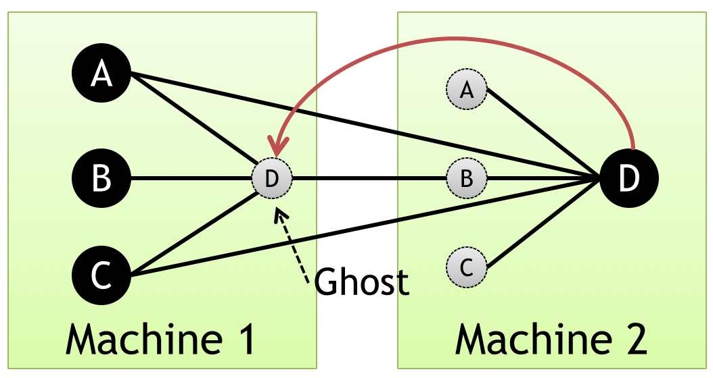
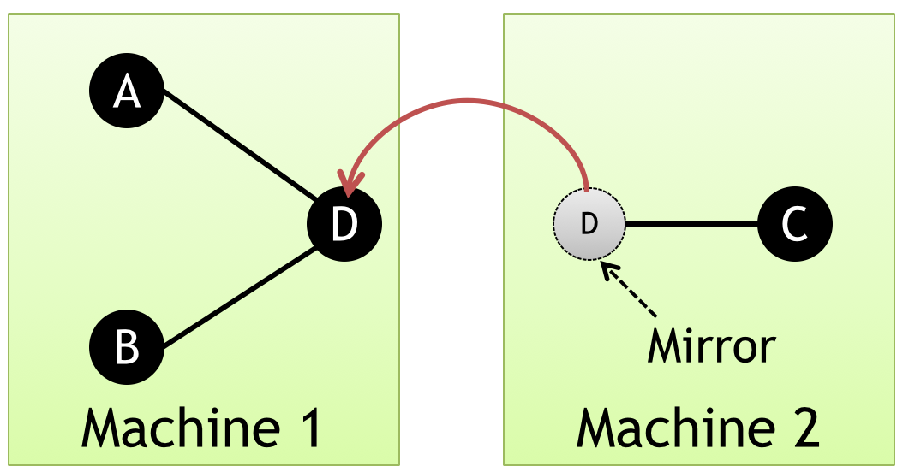
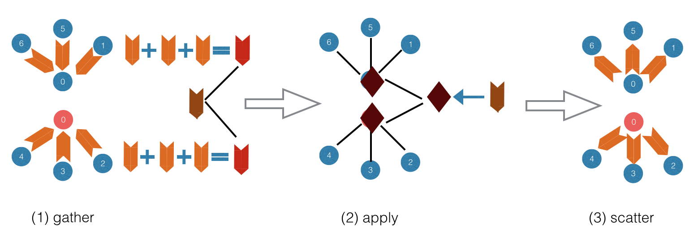
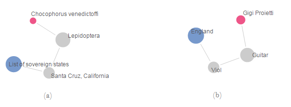
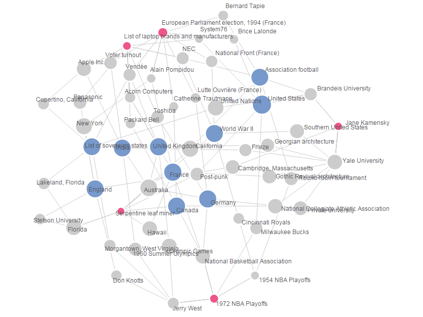

Graph Programming using GraphLab
Learning Objectives
This project will encompass the following learning objectives:
- Develop graph-parallel programs using the GraphLab programming model.
- Gain experience with GraphLab’s API
- Analyze a large-scale graph in a real-world scenario using graph algorithms
Resource Tagging And Budgets
Tag all of your resources with Key: Project and Value: 4.3
You have a budget $15 for Project 4.3.
GraphLab
In this section, we will give a brief introduction to some aspects of GraphLab you may need to know in this project. To have a deeper understanding on GraphLab, you should go to unit 4 in OLI and read related materials to get more information.
GraphLab is a distributed graph-parallel framework developed by CMU, which is used to perform machine learning and data mining algorithms efficiently on large-scale datasets. GraphLab abstracts the computation as vertex and data dependencies between computations as edges. It uses vertex-centric model, where the user-defined program is represented as an update function running on a scope consisting of a centric vertex and its adjacent vertices and edges. The computation can be either performed synchronously with Bulk Synchronous Model (BSP) or asynchronously using flexible consistency models.
In GraphLab1.0, the data represented as a graph is partitioned using edge-cut, meaning two endpoints of an edge may be located at different machines. In GraphLab2.0 (also called PowerGraph), the partition method is changed to vertex-cut in order to handle the power-law property of having a few highly connected vertices which is exhibited in most of the natural graphs. In the PowerGraph approach, each edge along with its two endpoints will be on only one machine, and for each vertex, one of its copies will be selected as the master node, the rest of its copies are considered as mirror nodes.
In the rest of this writeup, when we refer to GraphLab, we mean GraphLab 2.0.
Figure 1: Edge-cut in GraphLab 1.0
Figure 2: Vertex-cut in GraphLab 2.0
To develop applications in GraphLab, a user needs to write a program which runs on each vertex. This is accomplished using the following three steps:
- Gather. For each vertex, its master and mirror nodes will accumulate information from their adjacent vertices or edges.
- Apply. In this step, the accumulated information will be aggregated in the master node of a vertex and be applied to update the state of the master node. The updated state of the master node will be subsequently synchronized to all the mirror nodes.
- Scatter. This is the final step where both the master and mirror nodes of a vertex could choose to update the data on their adjacent edges and send messages to their adjacent vertices. The vertices which receive messages will be activated and will continue performing subsequent computations.
These three steps can be illustrated in the following diagram:
Figure 3: Gather, Apply, Scatter in a user-defined program
Breadth-First Search
Breadth-First Search is a commonly used algorithm for traversing trees and graphs. The algorithm starts from a given node and explores its neighbors level by level, where all the nodes that are one step away from the starting node are examined, followed by the nodes that are two steps away, three steps away and so on. Due to this kind of traversal order, the path between two nodes found by BFS is guaranteed to be the shortest one in an unweighted graph.
The pseudocode below demonstrates the sequential implementation of this algorithm:
procedure BFS(G,V) is
let Q be a queue
Q.push(v)
label v as discovered
while Q is not empty
v ← Q.pop()
for all edges from v to w in G.adjacentEdges(v) do
if w is not labeled as discovered
Q.push(w)
label w as discovered
The Scenario
So far you have learned to build a simple search engine, rank pages appropriately and autosuggest search terms. One feature that could set Mellonitics apart is if we could find the most relevant links that connect two topics (in case you forgot, Mellonitics was the company you founded in Project 4.1). To be able do this, we need to link all our content together in the form of a graph. Then, for any pair of search terms, we can build a short list of pages that link the most relevant content together for a search term.
Like many people, I'm sure you've often wondered: "How is Chocophorous venedictoffi related to the List of sovereign states?". Or, if you are less of an intellectual, you may have wondered "Is Gigi Proietti related to England?"

Figure 4: Finding links and paths between topics (using Breadth First Search)
a.Answering the eternal question: How is Chocophorous venedictoffi related to the List of sovereign states?
b.Answering the infernal question: Is Gigi Proietti related to England?
Fortunately, you can use GraphLab to answer these questions and many more like them. By writing a simple Breadth First Search program, you can find the links between any topics, no matter how obscure. You hope to leverage this as an entrepreneur-- you want to create a great business that links Cloud Computing and Ice Cream, but don't know how. And when you use this tool and your 15-319/15-619 skills to create the next billion-dollar startup, please remember your friendly TAs.
Figure 5: Constructing a network of related data. Can you believe that Jane Kamensky is so closely related to Alain Pompidou?
Any knowledge by itself is a vacuum. Mellonitics equips you with the tools to see the big picture; simply plug in some terms you feel are relevant and it can show you all the relevant topics. Use this to prepare for exams, impress people with your breadth of knowledge on a particular topic, and most importantly, complete all your 15-319/619 work this semester. May the Force be with you.
The Dataset
In this project you will use the enwiki-2013 dataset. It’s a graph file which represents a snapshot of the English part of Wikipedia as of late February 2013. There are over 4 million nodes and 100 million edges in the graph, where each node represents a page in Wikipedia and there will be an edge (a, b) if page a has at least one link to page b. You can download the graph file from s3://s15-p43-dataset/enwiki-2013-arc. We also provide you a mapping file that can help you find a page’s title according to its id in the graph. You can download this mapping file from s3://s15-p43-dataset/enwiki-mapping.
Task to Complete:
To complete Project 4.3, you need to finish the following tasks:
Task 1: Find the popular pages
In this task, you will deploy GraphLab in EC2 and run the PageRank program which is provided within GraphLab in order to rank pages in Wikipedia.
- Launch three m3.large instances with ami-e697958e and note down their public DNSs. Set the security group of all these instances to allow all traffic.
- Upload the key pair file you use to log into EC2 instance into each of those three machines.
- Log into each instance and create a file config in the /home/ubuntu/.ssh directory. Add the following lines into config:
Host *.compute-1.amazonaws.com IdentityFile <path of your key pair file>After making the above configuration, those three instances should be able to ssh into each other without specifying the key pair file, which is a requirement to run GraphLab. You should verify this by trying to ssh from one instance to another instance.
- Go to one of the instance and create file machines in the home directory. Put the three DNSs you noted down in step 1 in this file, with one DNS per line and the DNS of current instance in the first line. In this task and next task, you will use this instance as the master node and the other two instances as slave nodes.
- Download the graph file from
s3://s15-p43-dataset/enwiki-2013-arcto this instance. - Change the working directory into graphlab/release/toolkits/graph_analytics and run PageRank program with the following command:
mpiexec -hostfile ~/machines -n 3 ./pagerank --graph <path of input graph> --format snap --saveprefix <path for output>
- Collect output files from the other two instances and aggregate them into a single file on the current instance.
- Find the ids of top 10 pages in terms of PageRank value from the merged file. Don’t delete this file now, you will need it in the last task.
Task 2: Find the connections between pages
After identifying the top ten Wikipedia pages, you need to find out how each of them is connected by other pages in Wikipedia.
- Change the working directory into graphlab/apps/bfs. You should see the skeleton code bfs.cpp in this directory.
- Complete bfs.cpp to implement the Breadth-First Search (BFS) algorithm with GraphLab’s API. For each of the top ten pages, your program should find all the shortest paths with each page in the graph as source and the current top page as destination. If there are multiple shortest paths between two pages, then the one with smallest numerical order is prefered. For example, if there are three paths between node 1 and 5 in the graph:
(1) 1 → 3 → 5
(2) 1 → 2 → 4 → 5
(3) 1 → 21 → 5
Then you should return path (1) as the answer, since it is shorter than path (2) and is smaller than path (3) in numerical order.
The output format should be:
.<source>\t<destination>\t<source> <v1> <v2> <destination>where there are two tabs between source and destination, and between destination and path. Numbers in the path should be separated by space.
For example, if the path between node 1 and node 5 is1 -> 2 -> 3 -> 4 -> 5
the line in the output should be1 5 1 2 3 4 5 - Go to directory graphlab/release/apps/bfs and execute make to compile your code.
- Distribute your executable program as well as the file which has the top ten ids to other two instances. Make sure they have the same path among all the three instances.
- Execute the following command to run your program:
mpiexec -hostfile ~/machines -n 3 ./bfs --graph <path of input graph> --format snap --top <path of file which contains the top 10 ids> --saveprefix <path for output>
Keep the output files of this program, you will need them in the next task.
Task 3: Visualize the connections
Although the text results can show connections between pages, they are not intuitive enough. Thus in this task, your will visualize those connections to make them easier to observe. To achieve this, you need to do the following steps:
- Launch an m3.medium instance with ami-0681836e. Make sure you set the security group to allow incoming http requests in port 80. After logging into it, you should see network.html, path.html, root.html, server.py and server.pyc in the home directory. These files are provided to read connections from database and visualize those paths in the webpage. You don’t need to modify those files.
- The MySQL server is already installed on the ami. You can connect to it by using command mysql -ucc -ppassword cc. We have created three tables in the database: the map table is used to store the mapping from node ids to page titles; the pagerank table is used to store the PageRank value of each page; the path table is used to store the shortest path between each pair of pages.
- Load the results for connections, PageRank values and the enwiki-mapping file into table path, pagerank, map respectively
- Start the web server by executing:
sudo nohup python server.py 80 &
- Now you can access the URL: http://<your web server’s dns> to see the visualized paths between pages.
- Copy your implementation of BFS algorithm bfs.cpp from the master node of GraphLab to the home directory of current instance. Perform the following steps to make the submission:
cd ~ wget https://15-319-s15-p43.s3.amazonaws.com/submitter chmod +x submitter ./submitter
- The above step will upload your code for manual grading and test the /top.json and /path.json endpoints. It is highly recommended to ensure you are able to view valid results at these endpoints before running the autograder. You will see your score updated on the scoreboard after this step.
Notes and Suggestions
Load Graph in Parallel
If you feel the time for loading the graph is taking too long, you can split the graph file into multiple pieces and distribute them among machines. Each machine will then load the pieces assigned to them simultaneously to accelerate the graph loading process.
Think like a vertexThe programming model of GraphLab is different from the models you have seen so far. The computation in GraphLab is vertex-centric, so you need to jump out of the box and use the perspective of a vertex to view the algorithm you are going to implement.
Tutorial and API reference for GraphLabYou can find the tutorial and API documentation of GraphLab in the directory graphlab/doc/doxygen/html. To view those html pages, you can download the whole folder into your own computer and open the index.html file to start viewing the document.
Additional Resources and References
3. Page, Lawrence, et al. "The PageRank citation ranking: Bringing order to the web." (1999).
4. http://en.wikipedia.org/wiki/Breadth-first_search
Project Grading Penalties
Besides the penalties mentioned in recitation and/or on Piazza, penalties accrue for the following:
| Violation | Penalty of the project grade |
|---|---|
| Spending more than $15 for this project checkpoint | -10% |
| Spending more than $30 for this project checkpoint | -100% |
| Failing to tag all your resources for this project | -10% |
| Using any instance other than the ones specified in the writeup | -10% |
| Attempting to hack/tamper the auto-grader | -100% |